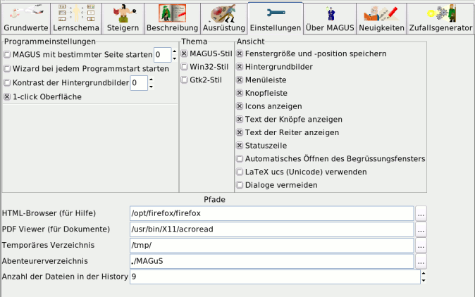

Bedienung - Optionen
|
Optionen
|
| Zum Seitenanfang |
Notebookseite Optionen

|
| Zum Seitenanfang |
Allgemein
Die Notebookseite Optionen dient zur Konfiguration und Anpassung von MAGuS. Die Optionen werden mit
Checkbuttons (multiple Auswahl) oder Radiobuttons (ausschließende Auswahl) aktiviert.
An einigen Stellen
können auch direkt Eingaben gemacht oder ein Fileselector aufgerufen werden.
|
| Zum Seitenanfang |
Globale Optionen
|
|
MAGuS mit bestimmter Seite starten:
MAGuS mit einer festgelegten Notebookseite starten. Die Nummerierung erfolgt
von links nach rechts, 0 entspricht der Seite generieren (default: inaktiv)
|
Wizard bei jedem Programmstart starten:
Wenn diese Option aktiviert ist, startet MAGuS mit aktiviertem Wizard. (default: aktiv)
|
Kontrast der Hintergrundbilder:
Die eingebetteten Hintergrundbilder scheinen mehr oder weniger stark durch.
|
1-click Oberfläche:
MAGuS readiert bereits auf den jeweils 1. Mausklick
|
|
|
| Zum Seitenanfang |
Ansicht
|
|
|
Mit den Optionen unter Ansicht läßt sich das Erscheinungsbild und Verhalten von MAGuS beeinflussen.
|
Fenstergröße und -position speichen:
Die Bildschirmposition und die Größe des MAGuS-Fensters wird beim nächsten Aufruf von MAGuS
beibehalten.
(default: aus)
|
Hintergrundbilder anzeigen:
Auf einigen Seiten von MAGuS werden Titelbilder der Regelwerke als Hintergrund angezeigt.
(default: an)
|
Menüleiste:
Die Menüleiste wird angezeigt oder ausgeblendent
(default: an)
|
Knopfleiste:
Die städige Knopf- bzw. Buttonleiste wird ein- oder ausgeblendet.
(default: an)
|
Icons anzeigen:
Die Icons der Reiter und der Fensterbuttons werden angezeigt oder ausgeblendet
(default: an)
|
Text anzeigen:
Bei Buttons innerhalb der jeweiligen MAGuS-Seiten wird der Text ein- oder ausgeblendet.
(default: an)
|
Text der Reiter anzeigen:
Bei den Reitern der Notebookseiten wird der Text angezeigt oder ausgeblendet
(default: an)
|
Icons der Knopfleiste:
Die Icons der ständigen Knopf- bzw. Buttonleiste werden ein- oder ausgeblendet
(default: an)
|
Beschriftungen der Knopfleiste:
Die Beschriftungen der städigen Knopf- bzw. Buttonleiste werden ein- oder ausgeblendet
(default: an)
|
Statuszeile:
Die Statuszeile kann ein- oder ausgeblendet werden
(default: an)
|
|
|
| Zum Seitenanfang |
Icons

|
Es wird zwischen den Icons im MAGuS-, gtk- und dem Win32-Stil umgeschaltet. Die Änderungen
werden erst beim Neustart von MAGuS wirksam.
|
|
| Zum Seitenanfang |
Pfade & Hilfsprogramme

|

Win32 Besonderheiten
|
HTML-Browser:
Der HTML-Browser wird benötigt, um diese Hilfe aus dem Programm heraus zu starten. Der Pfad kann entweder direkt
eingegeben werden, oder es wird mit dem nebenstehenden Button ein Fileselector geöffnet, mit dessen Hilfe der
Browser auf dem System gesucht werden kann. Liegt das Programm in $PATH, dann reicht es das entsprechende Kommando
(ggf. mit Optionen) anzugeben
(default: mozilla)
|
Unter Windows wird der fr HTML eingetragene Standardbrowser verwendet |
PDF-Viewer:
Zur Ansicht und zum Ausdruck der mit MAGuS erstellten Dokumente im PDF-Format wird ein PDF-Viewer
benötigt. In der Regel ist dies der Acrobat-, bzw. Adobe-Reader. Über den Pfad kann jedoch
auch ein alternativer Reader ausgewählt werden.
|
|
Temporäres Verzeichnis:
In diesem Verzeichnis werden die vom MAGuS genutzten temporären Dateien angelegt. Der Pfad kann direkt, oder mit
Hilfe eines Fileselectors ausgewählt werden.
(default: /tmp/))
|
Unter Windows wird das vom System vorgegebene Verzeichnis verwendet, meistens;
"C:\WINDOWS\TEMP\"
|
Speichern:
Hier wird der Speicher-Ort für die mit MAGuS erzeugten Abenteurer festgelegt. Das Verzeichnis kann sowohl von Hand,
als auch mittels eines Fileselectors eingegeben werden.
(default: $HOME/.magus/)
|
|
Anzahl der Dateien in der History:
Es kann eingestellt werden, wieviele (bereits gespeicherte) Abenteurer unter dem Menü Datei aufgelistet werden
und per Mausklick geöffnet werden können.
(default: ??? )
|
|
|
| Zum Seitenanfang |